可怕的时代 @ Dec 22, 2009
今天看求职信彻底崩溃，某大侠发来的简历照片居然是他把一只手伸进一头母牛生殖器的英姿！之前见过最不靠谱的简历照片也只是一个傻小子举着条蟒蛇傻笑而已（还有一个发来多人合影但不说明自己是哪一位的）我受过的训练不允许我因而对“80、90后”妄加非议，但必须承认我做雇主的时候，赶上了可怕的时代。
--转发自“罗永浩的围脖”
今天看求职信彻底崩溃，某大侠发来的简历照片居然是他把一只手伸进一头母牛生殖器的英姿！之前见过最不靠谱的简历照片也只是一个傻小子举着条蟒蛇傻笑而已（还有一个发来多人合影但不说明自己是哪一位的）我受过的训练不允许我因而对“80、90后”妄加非议，但必须承认我做雇主的时候，赶上了可怕的时代。
--转发自“罗永浩的围脖”
大概因为白天很少陪它们，所以买回许多宠物食品，每每离开家之前会丢一些给他们一解苦闷。今天回来晚了马上拿出上等美味，它们都爱。这么做不过是安慰自己罢了。遗憾的是Luke好象对羊蹄子没兴趣，土豆忘我地啃得昏天黑地，偶而抬头看看我。


Luke好奇地看着它啃啊啃啊啃啊。。。

并且叼起一只藏到门后的墙角，并回头警惕地张望。

忽然Luke气呼呼地冲到土豆窝前把另一只也叼到墙角，趴下来守着。
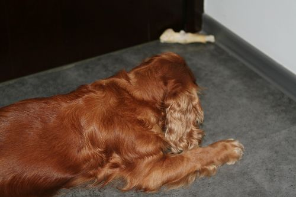
土豆很无辜地坐在窝里看着我。
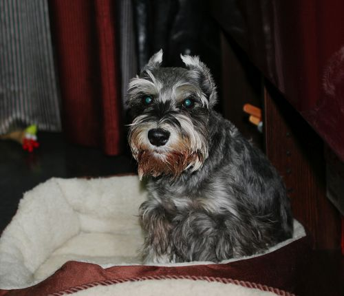
我把两只羊蹄子还给土豆，Luke倒也不抢了，在窝外看着它继续啃。土豆啃着啃着睡觉了，Luke叼出一只，用两只前爪抱着大啃特啃起来。狗狗的心理活动真是有意思。

现在俺们家已经四个狗窝了，全部被土豆尿了个遍，然而它到我家一个月后在我即将崩溃之时，土豆的坏习惯嘎然而止，会在狗厕所上便便了。想来还是需要时间相互适应，主人千万不要过早放弃它们才好。当然土豆还有一个坏毛病：啃鞋子。我那双夏天买的顺牌拖鞋已经被啃得面目全非，奇怪的是只要我在家它是肯定不会啃东西的，所以羊蹄子绝对是福音啊，在我上班的时候可以帮助它解决啃东西的问题。
以及外出散步Luke就是它的小护卫，别的公狗狗想和土豆玩，它会坚决赶人家走呢，真是个醋坛子。
中午和好朋友在食堂吃午饭，一个大圆桌，对面坐了一溜男士。正当我们两人交谈甚欢之时，靠近女伴儿的男士朝我们这边打了一个大喷嚏，“啊欠”！女伴儿的筷子骤然掉落餐桌，一溜男士也忽然没了声音，相视的我们从微笑渐变成木鸡状呆呆地楞了几秒，然后，同时起身，端起盘子离开。
********************************************************
我喜欢大方又精致的打扮，比如下面几款。当然不否认某些周末也有矫情的时候。
午饭时分我们讨论了“花枝招展”这个问题，有些是衣服穿人，有些才是人穿衣服。要让身上的衣服提高自然又自如表达自己的作用，哪怕是疾步行走。由此看来无论谁穿上高跟鞋做一份忙碌的工作，都会受限于它。所以3CM以上的鞋跟会降低你的职业形象。试想，一个在办公室里扭来扭去以保持平衡的女性，纵然你再忙，别人也不会认为你在工作。
亦舒说：“办公室女职员实在不宜过分突出女性特征，这样做会被老板及同事低估工作能力，还是端庄点好，况且披头散发怎么做事，现在讲究效率，妩媚如世界小姐做不出成绩来也不行。”


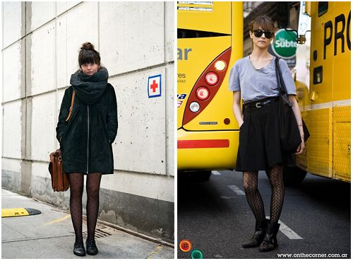
拍摄于ZURICH。
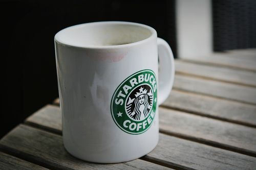
STARBUCKA进驻中国市场之初，店里还用这种标志的白色马克杯供应咖啡饮品。2000年初我在上海花了40元买了同款的马克杯，用到现在。如今国内STARBUCKS店里很少再见用这种杯子招待客人。在ZURICH最后那个冷雨的上午，用它灌下一杯温暖的咖啡。握着它就象握着自己的杯子一样。
小日本把中国人当SB耍，国产后的Highlander出丑了，12月中旬温州某人驾驶国产2.7排量的汉兰达居然爬不上一个30度的坡道，同行的面包车和CRV都上去了，就剩他的车爬不上去。我觉得那么重那么大的车，2.7排量太小，3.5的应该不成问题，以及四轮的动力分配可能也有问题。
“开车，下坡别在camry前面，上坡别在Highlander后面。”以及现在大家见面不问“您吃了吗？”而是问“今天您爬坡了吗？”丰田公关不久就会开个飞机过来，一到丰田坡就一头栽下来，然后说，这坡连飞机都飞不过去，小车当然是不可能的了。。。。车到山前必有路 有路必有三十度。各个网站Highlander论坛里访客爆多，太有意思了！
据说温州丰田4S店里的销售经理最近也吃不下饭，顾客一来就要将车开到各种坡道上去试，有的甚至还要开到“汉兰达坡”那儿试车。4S店给出的反馈是：“这是城市车，不是专业越野车。”可是拖拉机能上的坡，汉兰达为何上不去？大家都去买拖拉机得了。最近好多车开到“汉兰达坡”那儿去作爬坡测试，浙江平白无故多了一个人文景点了！
丰田公关厉害，全国的媒体除了新华网其它全部封杀消息，真有能力。

-汉兰达坡已经演变为娱乐旅游景点
-爆笑实拍！网友多车测试“汉兰达坡”
-杯具！小面能上丰田汉兰达上不了的小土坡
看看这个视频: 爬90度坡的超牛越野车
周末怎么样都要休息一天，周六决定去南艺看看新生代漫画展。最近工作上超级忙，除了每天加班外，周末也要搭进来，生活质量明显下降。有个同事说他晚上回家会喝点酒才能放松下来睡觉，而我最近躺进被窝要过好久才能入眠，脑子里转啊转啊转啊的。。。这些辛苦只有自己知道。好吧，让我们忙并快乐着。
最爱吕江作品《微笑．中国表情》。

这组作品起初吸引我的是简洁的线条，Sherry说有点宫奇竣风格，故事也有点意思，大致是说一个下半身长在土里的女子（树）与一个人类相遇，男子将她从土壤里拔出来带着她行走天下，开始她的下半身仍然是树根（见下图），后来渐渐长出人类的双脚，可以和这个男子一起行走了。寓意各人体会。

还喜欢这组漫画的风格，讲述跳楼男孩儿的故事。

LAN LAN作品《剪发》，引起我注意的是画中女孩儿象极ziboy的GF，究竟是否是他的GF所画有待查证。作品表现的是女性月经前期，男女双方心理以及情绪上的活动。

以下三副有习作有完整故事，均是我喜欢的风格。


两个女孩儿走在我们前面，穿着一样款式一样颜色的UGG款的靴子，我对Sherry说：“你瞧，好朋友穿得都一样，我们也有一样的羽绒服。”去展览前她在电话里说：“不要和我抢，我今天要穿这件羽绒服去。”可是我们又不约而同地戴了黑色毛线帽。
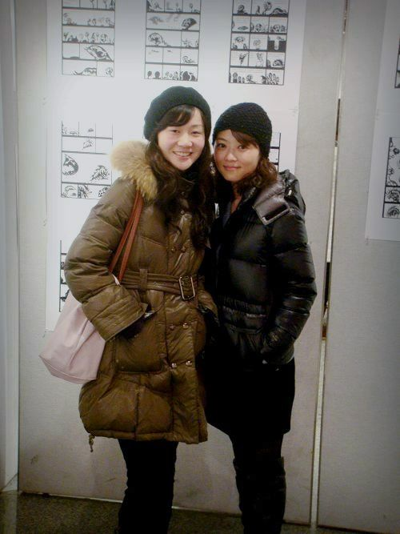
它是这样一个展览。

周末看过光光喜爱的男演员列表，总结了下他们的共同点是均有双会说话的眼睛，以及忧郁、稍许的颓废与不羁。这些共同点恰好也是我喜欢的男演员的特点，不过我看了下自己喜欢的男演员，感觉处于两个极端。。。说明两个我同时寄生于同一个我中。
***Mel Gibson***
因《Brave heart》对他着迷又崇拜，女人对英雄形象没有免疫力。当然这位英雄还得有男人味和宽宏的胸怀，否则如何装得下世界之大？失望于他主演的《What Women Want》，荧幕牢固的英雄形象之后无法接受生活片中的他。
主要导演作品：
Apocalypto (2006)
The Passion of the Christ (2004)
Brave heart (1995)
The Man Without a Face (1993)
Complete Savages(2004)


***James McAvoy***
因《Atonement 》对他产生兴趣，如果没有影视作品压根不会注意到长着娃娃脸的他。James在《The Chronicles of Narnia 1 》里饰演一只半人半羊（Faun）的配角，呵呵，他一出场就被他那双无辜又有故事的眼睛吸引了，你会觉得那不是普通的一只神兽。以及看过下面这段言论就不难理解他为什么会娶比他大9岁的女人为妻了。
"We're in a horrible, repugnant place now where kids are told it's their right and due to be hugely famous. Not good at their job, not good at anything, just hugely famous. This is not sane.Little girls think they'll be famous if they have vast breast implants and might as well die if they don't. "
近几年出演的电影：
The Last Station （2008）
Wanted （2008）
Atonement（2007）
Becoming Jane （2007）
Starter For Ten （2006）
Wimbledon（2004）
Shameless（2004）
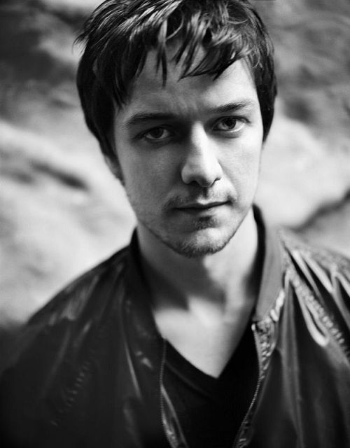
***Adrien Brody***
因《The Pianist》认识他、对他产生兴趣。我觉得他长着一副意大利人的摸样，或者说在我印象中意大利男人就长得这样子。可他是地地道道的美国人，脸上挂着一个鹰勾鼻对于从事表演事业的人不是什么好运气，可是这却并没有影响到我对他的喜爱，虽然这也出乎我一贯审美之外。
很多人可能并不知道他曾主演过德国独立导演彼得·泽尔的作品《Love The Hard Way》，2004年1月份我曾为此写过一篇Blog，这部电影根据我国王朔的小说《一半是火焰一半是海水》改编的作品，整个故事置身于纽约，但原著中对人的精神层面的揭露和分析在电影中得到放大。里面的女主角Charlotte Ayanna的身材完全不输给Scarlett Johansson，五官甜美，遗憾的是她没出演什么有名气的作品。

***Jason Statham ***
喜欢上他是从他作为Audi A8御用代言人开始，那车开的很拽很眩很摆很酷，又一英国演员，曾是英国国家跳水代表队成员之一。他出演了过Guy Richie风格的电影作品：《Lock Stock and Two Smoking Barrels》、《Revolver》、《Snatch》，在Luc Besson为他量身打造的《Transporter》系列片中出演一位技术高超的司机，应该也是Audi赞助的电影。以及三部《CRANK》中饰演愤怒的杀手，就是一个死不了的荧幕硬汉形象。
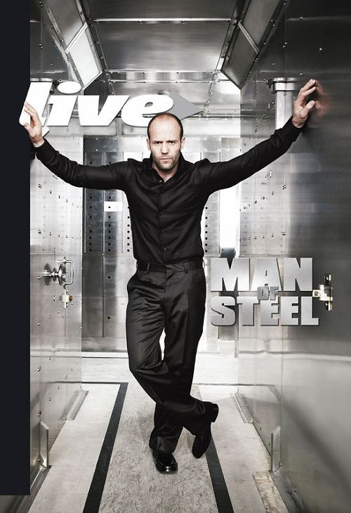

***Johnny Depp***
虽然之前有看过他主演的《Sweeney Todd》、《Pirates of the Caribbean》、《Once Upon a Time in Mexico 》三步曲、《Chocolat 》。。。总之他出演的电影非常多，出道早也是原因之一吧？我觉得他身上有一股邪气，具有鬼魅的梦幻气质。我是在三周前才喜欢上这位演员的，因为他的那部《Public Enemies 》。他除了演技精彩之外，情史也颇为精采，具有“好莱坞坏男孩”之称，甚至还被美国小报写成魔鬼的化身。
惊曝人眼球的是1994年，他居然与Kate Mos相恋，性格如此强的两个人虽然深深相爱，但却并不适合在一起。据说某次争吵之后，性格刚烈的Johnny Depp把高级酒店2000美元一晚的套房砸了个稀巴烂而被捕。他现在的太太是位模特，反正不符合我的审美~

耍酷耍成这个摸样不容易呢，超爱这张。
***孙红雷***
“有一种狂是来自苦难，没有生活感悟的表演只能是苍白的。”他曾经是霹雳舞教练，不知道吧？喜欢他的演技，不是因为某部作品而注意他，就是他一出现在屏幕上，我就立刻被他的表演吸引了。所以他演什么都无所谓，看他表演就觉得过瘾，很有张力和韧性，把握自如。记得有位戏剧学院的老师曾说过：“演技方面大家不会相差太大，最后还是演员人格魅力的吸引。”
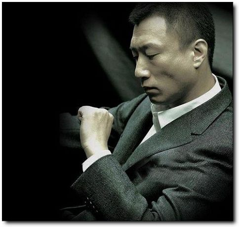
***权相佑***
听说韩剧的编剧们是一群在家没事的老大妈，估计每部韩剧都能造出一颗新星。我是因为《天堂的阶梯 》喜欢这花样面容的权像佑，以及对比国外明显摄影，亚洲写真真是缺乏力度和个性。花样美男比较适合青春期的审美，可是他的体型很好啊，可以做时装模特。以及快要不是我的那杯茶了，想起他就觉得单薄。

瞧瞧，区别在哪儿？

动作一摸一样，气质不同表现也就不同。Johnny Depp可是坐在煤气灶上，脚踩烤箱门，手上还夹着根烟，这就是腔调！哈哈哈哈~~~~~
周六一大早准时在工作日早晨的8点醒来，周末唉，这么早起床太亏了，可是再继续睡又睡不着，于是拿起手机瞧围脖。
一早看到洪晃大姐的围脖上愤愤地发表电影《三枪》的观后感：
**三枪基本上就是骂中国电影观众是傻B的片子；
**谁槛三枪谁傻B，我今天当了三十分钟傻B还交了八十元，劝没去看的人就别去找挨骂啦；
**但愿，五代已死，五代万岁！
**说得比我文明多了，但是《三枪》是中国电影人的耻辱，也是中国电影得耻辱。我知道我越这么说，越有人会好奇地去看，作为观众，这个电影就是在侮辱你的智商。真的。
她指的是生于80后，导演处女作惊悚片《午夜出租车》的张江南导演说的：《三枪》一帮毫无创作诚意、毫无职业道德、毫无对“电影”和“电影观众”表现出哪怕最低限度尊重的“电影投机商人”，对观众和电影本身极尽亵渎和侮辱之能事的，对善良的观众进行地极其廉价而狂妄的、明目张胆且大张旗鼓地公然诈骗行为！作为观众，我出离愤怒！作为电影从业者，我感到莫大耻辱！
张江南回复@洪晃:《三枪》是中国电影耻辱的一页，之前烂片达不到这高度。因为“谋”是中国电影（人）的名片。若奥运会的执导还为从业者挣了面子，那么这次就是彻底的出卖。愤怒，是因为感到一种前所未有的背叛。这一耳光闪在脸上，隔夜，仍火辣辣的。其对行业的尊严、信誉之损害难以估量。
张江南：为了抚慰被《三枪》伤害的伤口，昨半夜看片回来赶紧找个好片救命，结果还真有效。在此推荐一下，以表何谓商业片，国内不公映，可买盘或下载：杜琪锋《复仇》——高品质制作，创新的故事，高级的爱狠情仇，视听盛宴，除此还有 情怀，人性冷暖，和感动。都是名导，差距人心自有掂量吧。
冯小刚、宁浩缺席的贺岁档，内地导演难唱主角了，陈可辛制造《十月围城》等一干香港导演，俨然这次是要给内地导演上课，展示：什么是商业电影的职业范儿！牛皮不是吹的，电影也不是。
有人捧《三枪》臭脚，说是堪比春晚，扯淡！别侮辱春晚好不好，春晚好歹真金白银砸了钱的，台上一秒钟，台下十年功，是谁都能上的么？我看，《三枪》充其量，就是一新开张的大型洗浴中心的堂会。那的二人转演出都这样~~
我看这位年轻导演水平也高不了，上面那几段话有多少个错别字，真应该替他数数，还是八零后就好这口？说到烂片，昨晚上我看《CRANK 2》，白灵在里面演得很卖力，一定是经济危机，否则怎么会接这么个角色？不过就没见她演过什么好角色，这次更是把我恶心个够！张艺谋电影我基本就没感兴趣过，外国人喜欢那是因为新鲜。
看了电视上“彩虹糖”的三个广告，第一次因为广告想去买来尝尝，创意太好玩了，用的是极普通的演员，好象连妆都没化，表演痕迹也是淡的很，看完第三支“彩虹糖”广告才顿悟这糖是让人一解烦忧的产品，以及今天“苏菲”广告里的两只兔子～哇～想从电视里揪住耳朵拎出来玩一玩。我喜欢那些有创意的橱窗和广告，可能因为自己太缺乏创意的缘故。在标准和程序井然有序地将人性分割成方块和三角，贴上“经典”标签打包出售，也许，包装上还有那句同样经典的台词“我更爱你现在备受摧残的面容”。在没有领略过Bauhaus之旅之前，这些在旅程中发现的各种小创意也一样能满足我那颗始终好奇又易被拨动的小心灵。
ZURICH班赫夫大街上BIG BOY商店外的橱窗。

SWISS MADE橱窗里的产品简洁抢眼，价格不敢恭维。瑞士的中产阶级以手工制造者为主，在瑞士可以找到许多创意设计，不去个两三回是无法感受透的。

班赫夫大街WOLFORD丝袜广告，诞生于1949年的WOLFORD，主要经营丝袜和内衣产品，现在也有了泳衣的生产线，该品牌不是将所有美好、性感、诱惑的元素融在一起的大杂烩，也不针对方方面面的市场阶层。WOLFORD只精选与众不同、新颖的素材，是一种针对少部分人的较奢侈产品。

布拉格书亭外拍摄的摇滚杂志封面，这照片编辑的忒有想象力了。
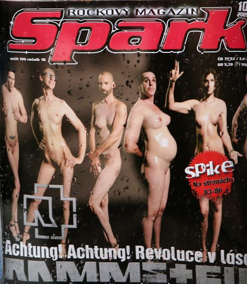
在PUDBEST和THUN的男女厕标志。
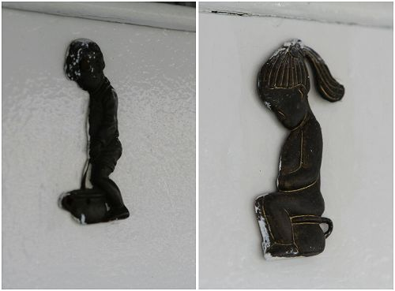

位于ZURICH的TEUSCHER巧克力店的橱窗，万圣节前夕，橱窗里几乎清一色南瓜小巫师的节日装饰，可爱又精巧。

瑞士籍著名时尚摄影师Michel Comte在时尚界已经25年，是当代全球四大最富盛名的摄影师之一。他被世人誉为“一个在视觉与心灵间行走的智者，一个以美的名义创造美的真实的人”。其作品常在Vogue, Vanity Fair, Interview, GQ等出现，摄影的对象都是全球著名的美女。
他于1954年出生在苏黎世，早年受训为一位绘画修复师，直至1979年他的人生有了重大改变，那年他受雇为时尚品牌Chloe拍摄平面广告，Karl Lagerfeld正是当时Chloe的创意总监。Michel Comte从未上过正规摄影课程，完全依赖自身天资和实践磨练。1981年，他搬至纽约，很快就找到自己的位置，成为美国的商业广告领域最具才华的摄影师。在过去的5年间，Michel Comte的作品流转于各大博物馆和画廊，成为他们的主要展出对象。2009年8月1日起，比利时布鲁塞尔Young Gallery将为庆祝Michel Comte从业30年举办回顾作品展。
如果你正好在展览期间去瑞士，有兴趣的话不妨去参观一下这位先生的作品。

呵呵，宠物店外的广告牌，狗狗也烫发呢~

ZURICH大牌橱窗里的模特，长统丝袜别致的设计不久大陆也会流行起来。

香港NOVOTEL酒店大堂的餐厅，那个高耸的玻璃酒柜和贴花的玻璃墙搭配在一起清爽雅致又多了点奢华感，装潢提升了餐厅档次。
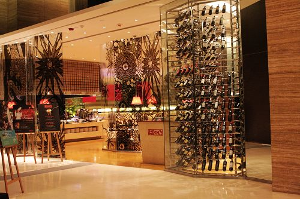
从Cesky Krumlov小镇出来，有个广告牌竖在茂密的树林里，它原先的创意所表达的意思没看出来，倒是看出来创意上的创意是张笑脸。

有天晚上我一个人从金钟廊步行穿过香港公园，路上遇见一位穿着黑色礼服扎着领结的老先生正在路边抽着雪茄，好象参加什么酒会中间跑出来抽烟休息一下的。在大陆大概只有在影视剧里才能见着扎领结的猥琐男人。可是这位我在现实中遇到的扎领结的老先生就象欧洲电影里那些风度翩翩的绅士。
我只知道领结要比领带更隆重，传统上，领结要配更正式的礼服在隆重的场合下，它被认为是唯一正统的领口衣饰。领结在流行文化中，也被视为有内涵的象征。这是ZURICH商业街一间橱窗里的花领结，上面织着各种冰淇淋和雪糕的图案，好Q啊。

这套首饰总价CHF8200.00，折合人民币含税价57400.00，反正也不是平时佩带的。它们在木头的粗犷衬托下经典又性感！不知道从什么时候开始流行大大的一颗宝石、钻石、装饰石、合成石。。。随便什么石头，只要是大大的一颗在戒指上的设计。前年为了拥有一颗大大的茶色水晶戒指，不惜用新品换走营业员手上的旧戒指，喜欢的前提下旧的也可以。戴这种款式的戒指不方便从包里掏东西，不方便将衬衣塞进裙子。。。利弊总是同时存在的。

FORGOTTEN PRAGUE。。。被遗忘的布拉格。。。可能又是什么展览吧？

MTR香港人说的地铁，墙上的卡通画是为庆祝香港地铁建立30周年纪念。
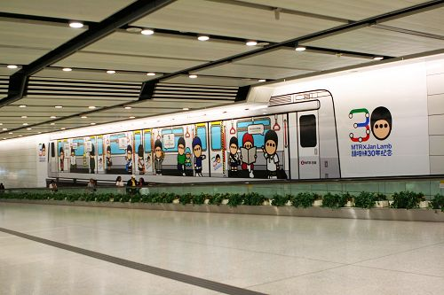
维也纳供市民与游客使用的公共自行车，上面有醒目的黄色标志。

布拉格沐浴用品店的橱窗设计，大概是指产品均为纯天然原料制作。

周六带着土豆来加班，它象一尊雕塑一样坐在椅子上看着我，乖得不行，加班的同事不少，有人笑嘻嘻的来看它摸它，它还是很乖地坐着。以及土豆现在越来越适应新家，越来越融入这个家，便便也知道在散步的时候或是在狗厕所上解决。
我把电脑从办公桌的右角落移到中间，一来离自己比较近，帮助不断下降的视力；二来不用每天扭着脖子工作，希望能提高工作效率。我知道往后工作会比以前忙碌许多，平时陪伴它们的时间少之又少，如果平时能带着爱宠上班，该多和谐啊！
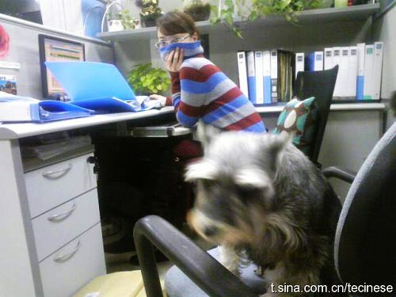
用厨房剪给它修的胡子，只是尾端有些钝，不那么美观，可是进食的时候胡子不会拖进食盆里，卫生许多。
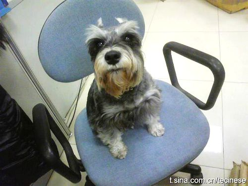
上述图片用手机拍摄，发到围脖上。以及在围脖上每天追着看问问、大惊喜和小原子在HK的行踪，要是还有假期真希望和她们一起走，一起逛，她们去的地方蛮有意思，虽然HK就巴掌那么大，每个人却能玩出自己的花样来。所以说有意思的是人，不是吗？！期待她们回来，看看她们眼中的HK是个什么样子。